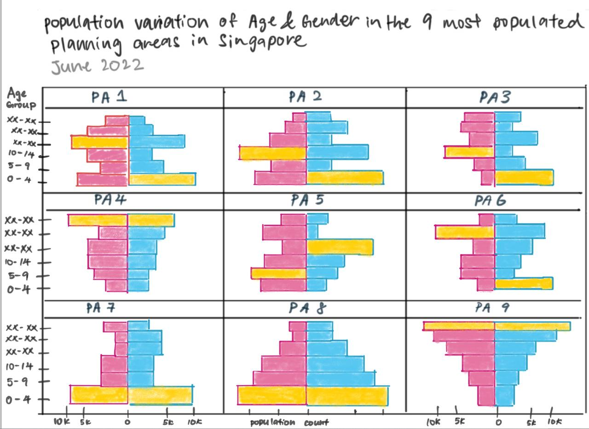
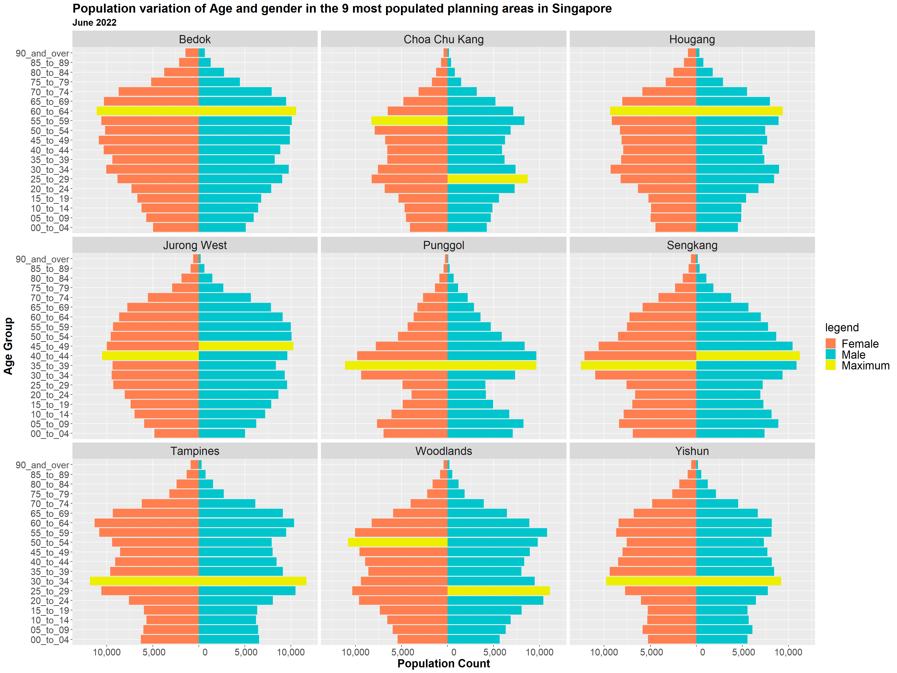

We will complete this take-home exercise based on a classmate’s take-home exercise 1 submission using Tableau. We will critique the peer submission in terms of clarity and aesthetics. Following that, we will rework the original design using the data visualization principles and best practices we learned in Lesson 1 and 2.
Singstats datasets are downloaded for take-home exercises 1 and 2. We will use ggplot2 and its extensions to visualize this take-home exercise.
2. Visualization Critique
In this take-home exercise, we will be reviewing and remaking this visual.
2.1 Critique
Clarity
(a) Reverse formatting of Y-Axis:
The sequence of age-group was reversed (e.g. Top X-Axis Age Groups started from “0-4”, then “5-9” and “90 & Over” at the bottom), which could lead to misinterpretation of the graph as it is challenging for the user to interpret the pyramid overall shape at first glance. This is because the common sequence of age-groups is from oldest to youngest, and when the sequence is reversed, it can be difficult for the user to interpret the graph.
(b) Unclear visualization title:
The task was to focus on 9 planning areas of Singapore, with breakdown by age group & gender. However, both essential components such as “Age Group” and “Gender” were not reflected in the original title “Singapore population distribution by age”. This can lead to confusion and misunderstanding of the scope of analysis as the title does not accurately reflect the key components of the analysis. Furthermore, without specifying the essential components, it is difficult to draw meaningful conclusions from the data. To better reflect the scope of the analysis, the title should be amended to “Population variation of Age and gender in the 9 most populated planning areas in Singapore”.
(c) Redundant X-Axis:
As the male and female population are both colored differently in the chart, there is no need to add individual X-Axis for each graph in the trellis. We could add a legend in place of it. This would simplify the chart and make the chart more visually appealing since it would be less cluttered.
(d) Inconsistent X-Axis across Planning Area & Gender:
There are different ranges for each X-axis for each planning area and gender. For instance, Jurong West may range from 0 to 60k, while Hougang may range from 0 to 45k. Having different X-Axis range for each planning area and gender will cause their values to appear greater or lesser than they actually are, thus skewing the results of the comparison. To ensure accurate comparison, the X-Axis range should be standardized across all planning areas and genders.
(e) Absences of source:
No recognition of the data source nor author.
Aesthetics
(f) Colours of Bar Chart is not purposeful:
Although visually appealing, gradient colors in the graph convey little additional information to the reader. The use of gradient colors in a graph can be distracting and make it difficult for a reader to quickly identify the most significant points. Maximum population count for each planning area & gender can be highlighted to draw attention to points of interest.
(g) Arrangement of planning areas is not purposeful:
Currently, the arrangement of the planning areas is in alphabetical order. We should arrange the planning areas with the highest population counts at the top left of the trellis, and the lowest population counts at the bottom right. It will also help with readability, as viewers will be able to quickly identify the most populated areas and compare their populations with the least populated areas.
2.2 Proposed Design

Advantages:
(a) Correct Ordering of Y-Axis:
Following the traditional layout of population pyramid, the age groups will be arranged in a descending order.
(b) Clear Title:
Title of Chart “Population variation of Age and gender in the 9 most populated planning areas in Singapore” will highlight key components that will be reflected in the chart.
(c) Removing X-Axis to be less cluttered
(d) Consistent X-Axis across Planning Areas & Gender for easy comparison
(e) Include recognition of data source and author
(f) Usage of colours to showcase insights
Highlighted bar with maximum population count across planning areas & gender
── Attaching packages ─────────────────────────────────────── tidyverse 1.3.2 ──
✔ ggplot2 3.4.0 ✔ purrr 1.0.0
✔ tibble 3.1.8 ✔ dplyr 1.0.10
✔ tidyr 1.2.1 ✔ stringr 1.5.0
✔ readr 2.1.3 ✔ forcats 0.5.2
── Conflicts ────────────────────────────────────────── tidyverse_conflicts() ──
✖ dplyr::filter() masks stats::filter()
✖ dplyr::lag() masks stats::lag()
Loading required package: knitr
Loading required package: scales
Attaching package: 'scales'
The following object is masked from 'package:purrr':
discard
The following object is masked from 'package:readr':
col_factor
First, we use the read_csv() function of the readr package to import Singapore Residents by Planning Area / Subzone, Age Group, Sex and Type of Dwelling, June 2022 csv dataset into the R environment.
Rows: 88312 Columns: 6
── Column specification ────────────────────────────────────────────────────────
Delimiter: ","
chr (5): PlanningArea, Subzone, AgeGroup, Sex, TypeofDwelling
dbl (1): Pop
ℹ Use `spec()` to retrieve the full column specification for this data.
ℹ Specify the column types or set `show_col_types = FALSE` to quiet this message.
read.csv() function from base R has the same functionality as read csv().
Note: read csv() function is preferred over read.csv() because it preserves the whole variable name. read.csv() replaces any spaces in variable names with a period (.), where the names of the variables will be changed.
3.1 Data Preparation
i) “SGPopulation” dataframe creation
Remove Subzone and TypeofDwelling columns;
Substitute the following AgeGroup labels:
“5_to_9” into “05_to_09”
“0_to_4” into “00_to_04”
Create “SGPopulation” dataframe for each Planning Area, group by Age Group, Sex:
iii) “Male_SGPopulation” and “Female_SGPopulation” dataframe creation
We will produce the dataframes “Male_SGPopulation” and “Female_SGPopulation” using the dplyr function filter().
We also utilize the mutate() function to set the values of “Female_SGPopulation” to negative. This way, both “Male_SGPopulation” and “Female_SGPopulation” barcharts can be reflected onto the same chart.
Applied facet_wrap to generate plots of the different subset of the data (in this case, the 9 most highly populated Plannng Areas identified);

4. Learning Points
Take-Home Exercise 2 gave me a chance to learn about others’ approaches to the same problem and gave me the chance to gain insights and new perspectives.
Every visualization has its own unique set of requirements and constraints, so the design should be tailored to the particular data set and the message it is trying to convey. Additionally, the visual elements should be easy to interpret and incorporate visual cues, such as color and size, to help the viewer better understand the data.
Furthermore, it is important to incorporate good design principles such as balance, contrast, hierarchy, and typography, in order to create an effective visualization. Additionally, it is important to consider how the visualization will be used and in what context, as this will affect the design decisions made.